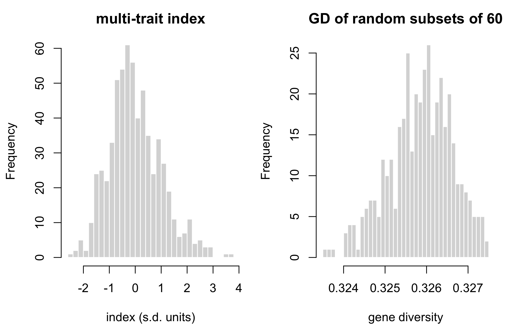

The Foundations part defined the quantities the book manages – coancestry (Chapter 2) and its partition over two pools (Chapter 3) – the response they are traded against (Chapter 4), and the heterosis that pool divergence is maintained for (Chapter 5). Chapter 4 drew its data from simulate_pools() and Chapter 5 from simulate_lines() and simulate_data(), both without deriving them. This chapter builds the generator step by step, with simulate_lines() and simulate_data().
simulate_pools() uses the same Balding-Nichols pool frequencies, homozygous lines and A x B factorial, but a different trait: n_qtl loci with independent effects plus noise, where the traits built here have correlated effects at every marker and no noise. Up to the lines the two generators consume R’s random stream in the same order, so called with book_cfg’s values (25 + 25 lines, \(m\) = 2000, fst = 0.15, seed 1) they return the same lines and the same hybrid marker matrix X (asserted in Section 6.2); only the traits differ.
The book_cfg values coincide with the arguments written in Chapter 4’s chunk, which asserts that its fst and seed equal book_cfg’s. simulate_pools() also clamps its pool frequencies to \([10^{-6}, 1 - 10^{-6}]\) and simulate_lines() does not, so the pool frequencies of the two functions agree to within \(10^{-6}\) and not exactly; at the arguments of Section 6.2 the lines are identical (asserted there).
Everything downstream of this chapter consumes three objects and knows nothing about where they came from. That is deliberate: it is the seam at which a simulation is swapped for real data, and it is the only place that has to change when it is.
This chapter builds those objects. It also builds the candidate set the rest of the book selects from, so the choices made here – how divergent the pools are (Section 6.2.2), how the index is constructed (Section 6.4) – determine what the later chapters have to work with.
6.1 What has to be produced
Table 6.1 lists the three objects, and the optional fourth.
Table 6.1: The stage-1 contract: the objects stage 1 hands to stage 2, with their shape (N hybrids, m markers, L lines) and the computations that need them. Stage 2 runs without fL; it loses only the pool decomposition.
Object
Shape
Content
Needed for
X
N x m
hybrid marker matrix, values in 0/0.5/1
every frequency-based metric
f
N x N
molecular coancestry of the hybrids
every coancestry-based metric
hybrids
N x (3 + n_traits)
hybrid id, the two parent lines, predicted traits
the index, and the line-usage vector
fL
L x L, optional
coancestry BETWEEN LINES
only the heterotic-group decomposition
6.2 Simulating the lines
Two heterotic pools are generated with a Balding-Nichols-type model. From Balding and Nichols (1995) this chapter takes the name of the model and the idea of expressing the divergence of a population from a common ancestral one in a single parameter; the Beta densities of Equation 6.1 and the reading of \(F_{BN}\) given with it are this book’s own specification for a biallelic locus, implemented in simulate_lines(), and are not quoted from that paper; the book attributes to Balding and Nichols (1995) no particular parameterisation. Ancestral allele frequencies \(p^{*}_k\) are drawn uniform on \([0.05, 0.95]\), then pool A’s frequency at marker \(k\) is drawn as
and independently for pool B (\(p_{Bk}\)), where \(k = 1, \dots, m\) indexes markers, \(p^{*}_k \in [0.05, 0.95]\) is the ancestral frequency of the allele coded 1, \(p_{Ak}, p_{Bk} \in (0, 1)\) are the pool frequencies of that allele, and \(F_{BN} \in (0, 1)\) is the parameter fst of the configuration (Appendix A). The Beta of Equation 6.1 has mean \(p^{*}_k\) and variance \(F_{BN}\, p^{*}_k (1 - p^{*}_k)\) (from \(\mathrm{Var} = ab/[(a+b)^2(a+b+1)]\) with \(a + b = (1 - F_{BN})/F_{BN}\)): \(F_{BN}\) is the divergence of each pool from the ancestral frequency, measured as that variance in units of \(p^{*}_k(1 - p^{*}_k)\), not a divergence between the two pools. The ancestral frequency \(p^{*}_k\) belongs to the draw: it is a parameter of the simulation and is never observed in the data. It is neither a pool frequency \(p_{Ak}\), \(p_{Bk}\) nor the frozen base ctx$p0 of the candidate set, which is a sample quantity of the hybrids (defined at the end of Section 6.5). Between the pools, \(\mathrm{Var}(p_{Ak} - p_{Bk}) = 2 F_{BN}\, p^{*}_k (1 - p^{*}_k)\), and the \(F_{ST}\) statistic of Equation 3.7 computed on two pools of unbounded size estimates approximately \(F_{BN}/(2 - F_{BN})\) (Appendix A): at the book’s \(F_{BN}\) = 0.15 that is 0.081, not 0.15.
Genotypes are then drawn as \(2 \times \text{Bernoulli}(p)\), which makes every line fully homozygous, as an inbred line should be. Table 6.2 checks the result.
L <-simulate_lines(book_cfg)stopifnot(all(L %in%c(0, 2)))# same lines and X as simulate_pools() called with book_cfg's values. The values# of @sec-response's chunk coincide with these (that chunk asserts its fst and# seed equal book_cfg's)sim_02b <-simulate_pools(n_A = book_cfg$n_pool_A, n_B = book_cfg$n_pool_B,m = book_cfg$m, fst = book_cfg$fst, seed = book_cfg$seed)stopifnot(identical(2* sim_02b[["GL"]], L),identical(sim_02b[["X"]], simulate_data(book_cfg)[["X"]]))blk <- L[1:5, 1:200]data.frame(quantity =c("lines (rows of L)", "markers (columns of L)","elements equal to 0, first 5 lines x 200 markers","elements equal to 2, first 5 lines x 200 markers"),value =c(nrow(L), ncol(L), sum(blk ==0), sum(blk ==2)))
Table 6.2: Line genotype matrix L at the teaching scale: its size (lines by markers) and the number of elements equal to 0 and to 2 among its first 5 lines and 200 markers. No element of the whole matrix takes another value (asserted in the chunk).
quantity
value
lines (rows of L)
50
markers (columns of L)
2000
elements equal to 0, first 5 lines x 200 markers
480
elements equal to 2, first 5 lines x 200 markers
520
Only 0 and 2 appear: no residual heterozygotes. With real data those must be imputed or dropped before this point, because the hybrid-genotype identity in Chapter 2 assumes homozygous parents.
6.2.1 What the generator assumes
The data of this chapter are generated under the assumptions listed here, and the numbers it reports (the grid, the replicates, the expectations derived for the divergence knob) are conditional on them. The exact algebraic identities it checks do not need them all: the per-hybrid heterozygous fraction equals \(1 - f^L_{ab}\) for any inbred parents, the identity of \(f\) with tcrossprod(cbind(X, 1 - X)) / m holds for any marker matrix coded 0, 0.5, 1, and \(\sum G = 0\) holds for any panel centred on its own sample frequencies. Independence across loci enters the dispersion of the replicates, not the expectations, which are sums over loci.
Biallelic, neutral, unlinked markers. The pools diverge by drift alone from one ancestral frequency vector (no selection, mutation or migration after the split), and the loci are independent of one another: \(p^{*}_k\), \(p_{Ak}\), \(p_{Bk}\) and every genotype are drawn independently across \(k\). There is no genetic map and no recombination, so no linkage disequilibrium arises beyond sampling noise. Chapter 9 relaxes this (linkage, outbred founders, directional dominance and several generations of selection).
Unrelated lines, inbred by fiat. Given \(p_{Ak}\), the lines of pool A are independent draws of \(2 \times \text{Bernoulli}(p_{Ak})\) at each locus, and likewise for pool B: there is no pedigree and no shared descent among lines of a pool beyond what the pool frequency carries. Each line is drawn directly at fixation (0 or 2 at every marker); the generator does not model the doubled-haploid or selfing path that produces inbred lines in a programme (Section 1.1).
Equal pool sizes and the complete A x B factorial.\(n_A = n_B\) in the configuration, and every A x B combination is formed once, with equal weight (Section 6.3). This is an assumption, not a property of hybrid programmes: the identities of the grid of Table 6.3 that tie the heterozygous fraction to \(GD_T + GD_{BS}\) need it. Chapter 18 and Chapter 20 choose which crosses are made instead.
Additive traits, effects at every marker, known without error (section “Predicted traits”): no dominance and no prediction error. Dominance enters in Chapter 5 and Chapter 9, and prediction error in
6.2.2 The divergence knob
fst sets how much of the pools’ diversity sits between them rather than within; it is not compared here with the number of markers, the number of lines or the trait correlation, so nothing is claimed about its rank among the parameters. What the divergence buys is less obvious than it looks: Figure 6.1 plots the heterozygous fraction of the F1 over a grid of \(F_{BN}\), Table 6.3 gives the coancestries and diversity components behind it, and Table 6.4 the changes between the two ends of the grid. The grid uses the teaching configuration (25 + 25 lines, \(m\) = 2000) with fst replaced by the grid value, so its row at \(F_{BN}\) = 0.15 is the F1 of the lines L of Section 6.2 and the heterozygous fraction of Table 2.6 of Chapter 2 (asserted against L in the chunk).
Show code
# the two trade ratios and the heterozygous fraction over replicate grids at the# two ends; simulate_lines() seeds from cfg$seed, so seed s is explicitgd_ends <-function(fst, seed) { cfg <-modifyList(book_cfg, list(fst = fst, seed = seed)) fL <-molecular_coancestry(simulate_lines(cfg) /2) A <-seq_len(cfg$n_pool_A); B <- cfg$n_pool_A +seq_len(cfg$n_pool_B) f_til <-mean(c(fL[A, A], fL[B, B])); f_bar <-mean(fL)c(GD_WS =1- f_til, GD_BS = f_til - f_bar, GD_T =1- f_bar,het =1-mean(fL[A, B]))}n_rep <-200rep_lo <-vapply(seq_len(n_rep), function(s) gd_ends(min(fst_grid), s), numeric(4))rep_hi <-vapply(seq_len(n_rep), function(s) gd_ends(max(fst_grid), s), numeric(4))rep_x <- rep_hi - rep_lo # change, largest minus smallestrep_ratio <-rbind(-rep_x["GD_BS", ] / rep_x["GD_T", ],-rep_x["GD_WS", ] / rep_x["GD_BS", ])rep_het_diff <- rep_x["het", ] # paired by seed
Show code
d <-data.frame(fst = fst_grid, t(div))# equal pool sizes: 1 - mean f^L_AB = GD_T + GD_BS exactlydev_grid <-rel_dev(d$het_fraction, d$GD_T + d$GD_BS)# the row at book_cfg$fst is the F1 of the lines L of this chapteri_cfg <-which(d$fst == book_cfg$fst)a_L <-seq_len(book_cfg$n_pool_A); b_L <- book_cfg$n_pool_A +seq_len(book_cfg$n_pool_B)dev_row <-abs(d$het_fraction[i_cfg] - (1-mean(molecular_coancestry(L /2)[a_L, b_L])))stopifnot(dev_grid < tol_exact, length(i_cfg) ==1, dev_row < tol_exact)# replicate mean +/- s.d. at the two ends (rep_lo, rep_hi of the chunk above)rep_end <-cbind(lo = rep_lo["het", ], hi = rep_hi["het", ])m_end <-colMeans(rep_end); s_end <-apply(rep_end, 2, sd)x_end <-range(fst_grid)# axis zoomed to the draws (a 0-1 axis hides a bar of s.d. 0.003)y_rng <-range(d$het_fraction, het_exp, m_end - s_end, m_end + s_end)plot(d$fst, d$het_fraction, type ="b", pch =19,ylim = y_rng +c(-1, 1) *0.25*diff(y_rng),xlab =expression(F[BN]),ylab ="heterozygous fraction of the F1")abline(h = het_exp, lty =2)arrows(x_end, m_end - s_end, x_end, m_end + s_end, angle =90, code =3,length =0.05, col ="grey35")points(x_end, m_end, pch =22, bg ="white", col ="grey35")grid()legend("bottomright", bty ="n", lty =c(1, NA, 2), pch =c(19, 22, NA),pt.bg ="white", col =c("black", "grey35", "black"),legend =c("one draw per point",sprintf("mean +/- s.d., %d draws", n_rep), "expectation"))
Figure 6.1: Heterozygous fraction of the A x B F1 (fraction of markers at which the two inbred parent lines differ, averaged over every A x B hybrid) against the Balding-Nichols parameter. Filled circles joined by a line: one simulated pair of pools per grid point (teaching scale: 25 + 25 lines, 2000 markers; seed 1, so the same ancestral frequencies at every point). Open squares with bars: mean and s.d. over 200 replicate pairs of pools (seeds 1 to 200) at the two ends of the grid only; the bar is the scatter of a single draw. Dashed line: the expectation, 2 E[p(1 - p)] for p* uniform on [0.05, 0.95], which does not depend on the parameter. The vertical axis is zoomed to the range of the draws, not 0 to 1.
Table 6.3: Divergence grid behind Figure 6.1, one simulated pair of pools per row (teaching scale: 25 + 25 lines, 2000 markers). \(F_{BN}\): the Balding-Nichols parameter; \(\bar f^{L}_{AB}\): mean line coancestry between a pool-A and a pool-B line; \(\tilde f\): group coancestry within a pool, self-coancestry included; heterozygous fraction: of the A x B F1; \(GD_{WS}\), \(GD_{BS}\), \(GD_T\): the gene-diversity components of Chapter 3.
fmt(data.frame(quantity =c("change in GD_WS", "change in GD_BS", "change in GD_T","GD_BS gain / GD_T loss", "GD_WS loss / GD_BS gain"),value =c(dWS, dBS, dT, -dBS / dT, -dWS / dBS)))
Table 6.4: Change in each gene-diversity component of Table 6.3 from the smallest to the largest \(F_{BN}\) of the grid (largest minus smallest), and the two ratios between those changes. Same single draw per grid point as Table 6.3.
quantity
value
change in GD_WS
-0.1323
change in GD_BS
0.0674
change in GD_T
-0.0649
GD_BS gain / GD_T loss
1.0387
GD_WS loss / GD_BS gain
1.9627
Across a 20-fold range of \(F_{BN}\) the heterozygous fraction stays between 0.3617 and 0.3663, against an expectation of 0.3650 that contains no \(F_{BN}\). Each point is one draw of a finite pair of pools. Over 200 replicate draws (seeds 1 to 200, the two ends of the grid only) the heterozygous fraction has mean 0.3651 (s.d. 0.0033) at \(F_{BN}\) = 0.02 and 0.3651 (s.d. 0.0059) at \(F_{BN}\) = 0.40; the mean change between the ends, paired by seed, is \(2.2 \times 10^{-6}\) with standard error \(4.0 \times 10^{-4}\), 0.01 standard errors from zero. A single draw per point therefore scatters by about 0.006, and the range of the six single draws (0.0046) is of that order: the figure by itself cannot separate a flat line from a small trend, and the replicate means and the expectation of Section 5.8 are what carry the flatness. Over the same range, in the terms of Chapter 3 with \(\tilde f\) the group coancestry within a pool (self-coancestry included, within_pool_f), the within-subpopulation gene diversity \(GD_{WS} = 1 - \tilde f = GD_{WI} + GD_{BI}\) of Equation 3.9 changes by $-$0.1323, the between-pool component \(GD_{BS}\) by 0.0674 and the total \(GD_T\) by $-$0.0649.
The \(GD_{BS}\) gain is 1.04 times the \(GD_T\) loss and the within-pool loss is 1.96 times the \(GD_{BS}\) gain; the expectations under drift in two equal pools are 1 and 2 (Chapter 3). Both ratios are single draws. Over the 200 replicate grids they have mean 1.005 and 2.003 with standard deviation 0.086 and 0.086, so the departure of this draw from 1 and 2 is within ordinary sampling variation.
The stopifnot() in the code of Figure 6.1 asserts the identity that ties the first trade to the flat line (deviation \(1.1 \times 10^{-16}\), tolerance \(1 \times 10^{-12}\)): with equal pool sizes the heterozygous fraction is exactly \(GD_T + GD_{BS}\), so a constant heterozygous fraction means that what \(GD_{BS}\) gains, \(GD_T\) loses.
That is not an artefact of this grid, under the assumptions of Section 6.2.1. For the F1 of inbred parents \(a\) and \(b\) the heterozygous fraction is exactly \(1 - f^{L}_{ab}\), hybrid by hybrid (asserted in the chunk of Table 6.8); its mean over the complete A x B factorial is \(1 - \bar f^{L}_{AB}\), with \(\bar f^{L}_{AB}\) (between_pool_f) the mean coancestry between a pool-A and a pool-B line (written \(f_{AB}\) in Chapter 3 and \(\theta_{AB}\) in Appendix A; Chapter 5 identifies them on the complete factorial). Section 5.8 derives the expectations for pools of unbounded size: the shared term \(2\bar p(1 - \bar p)\), which is \(GD_T\) here, loses \(F_{BN}\,p^{*}(1-p^{*})\) and the divergence term, which is \(GD_{BS}\), gains the same amount. Here \(GD_T\) and \(GD_{BS}\) are computed from the sample frequencies of \(n\) lines per pool, which add binomial variance \(p_{Ak}(1 - p_{Ak})/n\) to each pool frequency; then \(E[GD_{BS}] = F_{BN}\,p^{*}q^{*} + (1 - F_{BN})\,p^{*}q^{*}/n\) per marker, with \(q^{*} = 1 - p^{*}\), and the loss of \(GD_T\) and the gain of \(GD_{BS}\) are both \(F_{BN}\,p^{*}q^{*}(1 - 1/n)\) in expectation. The factor \((1 - 1/n)\) cancels in the ratios 1 and 2. With \(n\) = 25 and the \(F_{BN}\) range of the grid, the expected change is 0.0666, against 0.0693 for unbounded pools. Section 5.8 derives the same expectation and the same sample-frequency offset on a different grid (seed 5, \(m\) = 2000); the formulas agree, and the numbers here are a different draw of the generator.
What this chapter measures is the heterozygous fraction and its split into \(GD_T\) and \(GD_{BS}\). Its data carry no dominance (the traits of Section 6.4 are additive), so the heterozygous fraction is not heterosis here. It is the F1 heterosis per locus only for flat dominance, \(d_k = 1\) at every locus (Equation 5.3), and its identification with \(GD_T + GD_{BS}\) needs in addition inbred parents, the complete A x B factorial and equal pool weights, the conditions of the \(GD_{BS}\) row of Table 3.6. Under those conditions neutral divergence relocates diversity from \(GD_T\) to \(GD_{BS}\) and creates no expected heterosis. Outside them this chapter says nothing about heterosis. Whether \(GD_{BS}\) is to be preserved is not a consequence of the flat line: Table 3.6 in Chapter 3 states it for those conditions and defers the argument to Chapter 5, and Section 5.9 treats what has to be true of the divergence, namely its alignment with the dominance effects, for the divergence to be worth anything.
6.3 From lines to hybrids
Every A x B combination is formed. With 25 lines per pool that is 625 candidates; at the production scale of 71 lines per pool it is 5041. Table 6.5 gives the size of the resulting dosage matrix M and Table 6.6 the first rows of the pedigree ped.
Show code
cfg <- book_cfga_ids <-seq_len(cfg$n_pool_A)b_ids <- cfg$n_pool_A +seq_len(cfg$n_pool_B)ped <-expand.grid(a = a_ids, b = b_ids)M <- (L[ped$a, , drop =FALSE] + L[ped$b, , drop =FALSE]) /2# 0/1/2data.frame(dimension =c("hybrids (rows of M)", "markers (columns of M)"),value =dim(M))
Table 6.5: Dimensions of the hybrid dosage matrix M (values 0/1/2) at the teaching scale: one row per A x B combination, one column per marker.
dimension
value
hybrids (rows of M)
625
markers (columns of M)
2000
Show code
head(ped, 3)
Table 6.6: First three rows of the pedigree ped of the complete A x B factorial: a is the row of L of the pool-A parent and b that of the pool-B parent (pool-B lines are numbered after pool A).
a
b
1
26
2
26
3
26
The factorial structure matters more than it looks. Because every line appears in many candidate hybrids, selecting hybrids is really selecting line usage – and that observation, made precise in Section 12.1, is what makes the whole problem tractable at production scale.
6.4 Predicted traits
Marker effects are drawn correlated across traits, through a Cholesky factor of a fixed correlation matrix, and the predicted values are the centered marker matrix times those effects. In this chapter R (the target correlation of the marker effects), B (the matrix of marker effects) and L (the line genotype matrix) are names of code objects, not the \(\mathbf R\), \(\mathbf B\) and \(L\) of Appendix A, and \(n_A\), \(n_B\) count the lines of pool A and pool B, not the female and male lines of Chapter 18.
Show code
set.seed(cfg$seed +99)R <-matrix(c(1, 0.3, -0.3,0.3, 1, 0.1,-0.3, 0.1, 1), 3, 3)stopifnot(nrow(R) == cfg$n_traits) # R is written for three traitsvr <-vanraden_G(M)B <-matrix(rnorm(cfg$m * cfg$n_traits), cfg$m) %*%chol(R)traits <-scale(vr$Z %*% B)rank_Z <-qr(vr$Z)$rankstopifnot(rank_Z == cfg$n_pool_A + cfg$n_pool_B -2)
Table 6.7 sets the realised correlations of the predicted traits beside the target R.
Table 6.7: Target correlation R of the marker effects and realised correlation of the predicted traits over the hybrids, for each pair of traits; one draw of marker effects at the teaching scale.
traits
target_R
realised
1 x 2
0.3
0.259
1 x 3
-0.3
-0.440
2 x 3
0.1
0.049
The Cholesky step gives each row of B, the effects of one marker on the 3 traits, covariance R. It does not make the realised trait correlations equal R: they depart from it by up to 0.140 in absolute value. The hybrid values are linear combinations of the columns of the centred matrix Z, whose rank is 48 \(= (n_A - 1) + (n_B - 1)\) for an additive A x B factorial, so each realised correlation rests on one draw of effects projected onto 48 dimensions. The target is a property of the effect distribution, not of this draw; how closely the realised correlations approach it on average over draws was not measured here.
ImportantWhat this simulation deliberately does not model
These predicted values are constructed from known marker effects, so they carry no prediction error. Real genomic estimated breeding values (GEBVs) do. The book therefore treats ctx$index as given throughout.
The optimum. For a given candidate set and a given constraint on diversity, no selection made on estimated values can have a higher mean true index than the optimum computed on the known values, because the optimum maximises that index over every feasible selection. This is a statement about the optimum.
The heuristics. The gains this book reports come from greedy, differential-evolution and local-search selections, which at book scale are not certified optima (Section 17.4; ocs_bound() gives a valid upper bound, and sel_exact() does not converge there). A feasible selection is not a bound: a selection made on estimates could exceed a heuristic’s index on the known values, so a gain in ctx$index does not bound the gain that a selection on estimates could achieve.
Scope. That statement about the optimum concerns the index only: it does not apply to the diversity metrics, which do not depend on the traits, nor to anything outside the additive model.
Additive only. The additive model also carries no dominance, so it cannot express specific combining ability (Section 5.11 models it; the caveats of Chapter 25 remain); the gap in prediction is closed in
6.5 The two matrices, both built
Show code
X <- M /2ctx <-build_ctx(X = X, f =molecular_coancestry(X), G = vr$G, traits = traits,ped = ped, n_lines =nrow(L),pool =rep(c("A", "B"), c(cfg$n_pool_A, cfg$n_pool_B)),fL =molecular_coancestry(L /2), cfg = cfg)# the heterozygous fraction of hybrid (a, b) is 1 - fL[a, b] (inbred parents)dev_G <-abs(sum(ctx[["G"]])) /sum(abs(ctx[["G"]])) # relative to sum |G|dev_f <-rel_dev(ctx[["f"]], tcrossprod(cbind(X, 1- X)) /ncol(X))dev_het <-rel_dev(rowMeans(ctx[["X"]] ==0.5),1- ctx[["fL"]][cbind(ped$a, ped$b)])stopifnot(dev_G < tol_exact,min(ctx[["f"]]) >=0, max(ctx[["f"]]) <=1, dev_f < tol_exact, dev_het < tol_exact)# simulate_data() builds the same ctx, apart from the column names of traitsctx_sd <-simulate_data(book_cfg)same <-setdiff(names(ctx), "traits")stopifnot(identical(names(ctx_sd), names(ctx)),all(vapply(same, function(k)isTRUE(all.equal(ctx[[k]], ctx_sd[[k]], tolerance = tol_exact)),logical(1))),isTRUE(all.equal(unname(ctx[["traits"]]), unname(ctx_sd[["traits"]]),tolerance = tol_exact, check.attributes =FALSE)))
Table 6.8: Size of the context ctx built in this chapter (N hybrids, m markers, number of lines) and the two properties checked on its matrices: the sum of the elements of VanRaden’s G, printed in scientific notation because it is zero only up to rounding, and the range of the molecular coancestry f. The code asserts \(|\mathrm{sum}(G)| / \sum |G|\) < \(1 \times 10^{-12}\).
quantity
value
N
625
m
2000
n_lines
50
sum(G)
\(-4.18 \times 10^{-11}\)
min(f)
0.6448
max(f)
0.8317
Table 6.8 shows the result. sum(G) is zero up to floating-point rounding: it is \(-4.18 \times 10^{-11}\), \(1.5 \times 10^{-15}\) of \(\sum |G|\), and not exactly 0. It is zero because vanraden_G() centres the markers on the sample frequencies of this very panel, colMeans(M) / 2, so that the columns of \(\mathbf Z\) sum to zero and \(\mathbf 1'\mathbf G\mathbf 1 = 0\) (Equation 2.4); G here is the matrix of Equation 2.3, and the property belongs to this centring, not to the matrix at other reference frequencies, where the sum need not vanish. f is inside \([0, 1]\), the other property of Chapter 2, on this dataset. Two identities are asserted with it (tolerance \(1 \times 10^{-12}\)): f equals tcrossprod(cbind(X, 1 - X)) / m to exactly 0, and the heterozygous fraction of each hybrid equals 1 - fL[a, b] to \(5.6 \times 10^{-17}\). The range of f is nonetheless narrow and far from 0: f is identity in state, unrelated individuals are not at 0 and its level is set by the marker panel (Chapter 2), so the assertion min(f) >= 0 is the weak property and the informative one is the range printed in the table.
The context also stores three objects computed once, from the 625 hybrids, at construction, and not to be recomputed per scenario (Table 6.9):
Show code
stored <- ctx[c("p0", "maf_pop", "index")]fmt(data.frame(object =names(stored),n_values =vapply(stored, length, integer(1)),min =vapply(stored, min, numeric(1)),max =vapply(stored, max, numeric(1)),row.names =NULL))# p0 is the mean of the two pools' sampled line frequencies (L is coded 0/2)dev_p0 <-rel_dev(ctx[["p0"]], (colMeans(L[a_ids, ]) +colMeans(L[b_ids, ])) /4)stopifnot(dev_p0 < tol_exact)
Table 6.9: The three objects stored once in ctx at construction: number of values (p0 and maf_pop one per marker, index one per hybrid) and their range.
object
n_values
min
max
p0
2000
0.0000
1.0000
maf_pop
2000
0.0000
0.5000
index
625
-2.4068
3.6491
p0 is the allele frequency vector of the candidate set, colMeans(X) over the 625 hybrids. It is the base against which F_hom and F_drift are measured in Chapter 10, and recomputing it per scenario would silently zero out the historical memory of erosion. It is a sample quantity of this draw: with equal pools and the complete factorial it is the mean of the two pools’ sampled line frequencies (asserted in the chunk of Table 6.9, deviation \(1.1 \times 10^{-16}\)). It is therefore a different object from the ancestral frequency \(p^{*}_k\) of Equation 6.1, which is never observed, and from the pool frequencies \(p_{Ak}\), \(p_{Bk}\). maf_pop is the minor-allele frequency of p0, pmin(p0, 1 - p0), and index is the multi-trait index of the hybrids, standardised once.
6.6 The stage-1 contract in one call
The construction of Section 6.2 to Section 6.5 is simulate_data(), which builds this chapter’s ctx (the elements are equal, except that simulate_data() names the columns of traits; asserted after ctx is built). stage1_simulate() passes its X, ped, traits and fL to stage1_build(), the function real data enter through:
Show code
cat(deparse(stage1_build), sep ="\n")#> function (X, ped, traits, fL = NULL, coding = NULL) #> {#> if (is.null(coding)) {#> if (max(X, na.rm = TRUE) > 1) {#> coding <- "012"#> }#> else {#> if (all(X[!is.na(X)] %in% c(0, 1))) #> warning("X holds only 0 and 1: ambiguous coding, read as 0/0.5/1 ", #> "(inbred lines). Pass coding = \"012\" if these are dosages ", #> "with no dosage-2 call.", call. = FALSE)#> coding <- "0-0.5-1"#> }#> }#> coding <- match.arg(coding, c("012", "0-0.5-1"))#> if (coding == "012") #> X <- X/2#> stopifnot(min(X, na.rm = TRUE) >= 0, max(X, na.rm = TRUE) <= #> 1, nrow(X) == nrow(ped), nrow(X) == nrow(traits))#> hybrids <- data.frame(hybrid = seq_len(nrow(X)), line_A = as.integer(ped$a), #> line_B = as.integer(ped$b), traits)#> list(X = X, f = molecular_coancestry(X), hybrids = hybrids, #> fL = fL)#> }
Table 6.10 lists what stage1_simulate() returns and Table 6.11 the first rows of its hybrids table.
Table 6.10: Components of the object returned by stage1_simulate() at the teaching scale: class and dimensions of each (rows x columns for a matrix or data frame).
component
class
dimensions
X
matrix
625 x 2000
f
matrix
625 x 625
hybrids
data.frame
625 x 6
fL
matrix
50 x 50
Show code
fmt(head(st1$hybrids, 3))
Table 6.11: First three rows of $hybrids of the stage-1 object: hybrid id, the two parent lines (line_A, line_B; rows of fL) and the predicted traits, standardised.
hybrid
line_A
line_B
trait1
trait2
trait3
1
1
26
-0.6881
0.1907
0.0154
2
2
26
-0.6103
-0.0321
1.4661
3
3
26
-0.3094
-0.5014
0.2138
For real data the same function is called with your own matrices:
Show code
st1 <-stage1_build(X = hybrid_markers, # N x m, coded 0/1/2 or 0/0.5/1ped = pedigree, # data.frame with columns a, btraits = predicted_traits, # N x n_traitsfL = line_coancestry, # optionalcoding ="012"# or "0-0.5-1"; NULL (default) auto-detects)
stage1_build() rescales 0/1/2 dosages to 0/0.5/1 before computing f. With coding = NULL it infers the coding from the values present, ignoring missing calls: any value above 1 means 0/1/2. That rule assumes a 0/1/2 matrix contains at least one dosage-2 call. A matrix holding only 0 and 1 is ambiguous – inbred lines coded 0/0.5/1, or 0/1/2 dosages with no homozygote for the allele coded 2 – and no rule applied to the values can resolve it; stage1_build() then assumes 0/0.5/1 and warns. Declaring coding removes the assumption. On the simulated hybrids, which contain dosage-2 calls, the two codings give the same f:
The ambiguous case: two hybrids at three markers, coded 0/1/2, with no dosage-2 call. Auto-detection reads each 1 as a homozygote, so it returns the coancestry of two inbred individuals that these hybrids are not; the declared coding returns the coancestry computed directly from the 0/0.5/1 matrix (Table 6.12).
Table 6.12: Molecular coancestry of the two hybrids of the ambiguous example (f11, f22: self-coancestries; f12: between them) as returned by stage1_build() with the coding auto-detected and with coding = "012" declared, and as computed directly by molecular_coancestry() on the matrix divided by 2.
coding
f11
f22
f12
auto-detected
1.0000
1.0000
0.3333
declared 012
0.6667
0.6667
0.5000
direct, X / 2
0.6667
0.6667
0.5000
6.7 What the candidate set looks like
Figure 6.2 shows the two quantities every later chapter trades: the index of the candidates and the gene diversity of random subsets of them.
Show code
op <-par(mfrow =c(1, 2), mar =c(4.2, 4.2, 2.5, 1))hist(ctx$index, breaks =40, col ="grey85", border ="white",main ="multi-trait index", xlab ="index (s.d. units)")set.seed(cfg$seed +3)gd_random <-replicate(n_subsets, gene_diversity(sample.int(ctx$N, n_sub), ctx))hist(gd_random, breaks =30, col ="grey85", border ="white",main =paste("GD of random subsets of", n_sub), xlab ="gene diversity")abline(v =gene_diversity(seq_len(ctx$N), ctx), col = book_pal[["ink"]], lwd =2)par(op)

Figure 6.2: The candidate set at the teaching scale (25 + 25 lines, 625 A x B hybrids, 2000 markers). Left: histogram of the multi-trait selection index of the 625 hybrids: the equally weighted sum of the standardised predicted traits (default weights of build_ctx()), re-standardised to mean 0 and s.d. 1. Right: histogram of the gene diversity of 400 random subsets of 60 hybrids, the baseline every later chapter measures against; dark vertical line: gene diversity of the whole candidate set.
The dark vertical line is the gene diversity of the whole candidate set. It does not sit at the centre of the distribution of random subsets of 60 – it sits above it. That gap is pure sampling, it has nothing to do with selection, and mistaking it for a loss is the subject of Section 11.9. Table 6.13 gives the size of the gap, from one set of 400 random subsets, with the Monte Carlo standard error of their mean: the gap is 59 standard errors, so it is not sampling noise of the subsets. Section 11.9 measures the same gap on the same ctx with its own subsets and derives its expectation, and the percentages differ only by the draw of the subsets.
Show code
stopifnot(gd_whole > gd_mean)knitr::kable(data.frame(quantity =c("GD, whole candidate set", "GD, mean of random subsets","Monte Carlo s.e. of that mean", "apparent loss (%)","gap / s.e."),value =c(sprintf("%.5f", c(gd_whole, gd_mean)), fmt_sci(gd_se, 2),sprintf("%.3f", gd_loss), sprintf("%.0f", gd_z))),align =c("l", "r"))
Table 6.13: Gene diversity of the whole candidate set, mean gene diversity of the random subsets of Figure 6.2 with the Monte Carlo standard error of that mean (s.d. of the subsets / square root of their number), the apparent loss (the difference as a percentage of the whole-set value) and the gap in standard errors. One set of subsets, the one of Figure 6.2.
quantity
value
GD, whole candidate set
0.32809
GD, mean of random subsets
0.32586
Monte Carlo s.e. of that mean
\(3.8 \times 10^{-5}\)
apparent loss (%)
0.681
gap / s.e.
59
Reproduce this chapter
All the code of this chapter, in order and with the explanation kept as comments, is one script: 03-simulating-crosses.R. Download it, install hybdiv, and run it top to bottom in an empty directory; cached results are fetched on first use.
Balding, David J., and Richard A. Nichols. 1995. “A Method for Quantifying Differentiation Between Populations at Multi-Allelic Loci and Its Implications for Investigating Identity and Paternity.”Genetica 96 (1-2): 3–12. https://doi.org/10.1007/BF01441146.
![Line plot of the heterozygous fraction of the F1, on a vertical axis zoomed to the range of the draws, against the Balding-Nichols parameter from 0.02 to 0.40; the six single-draw points scatter over a range of 0.0046 around a dashed horizontal line at the expectation, 0.365, about as much as the replicate bars, and the figure cannot separate a flat line from a small trend. At the two ends of the grid an open square with a bar marks the mean and standard deviation over 200 replicate draws: 0.365 and 0.003 at 0.02, 0.365 and 0.006 at 0.40.](03-simulating-crosses_files/figure-html/fig-divergence-het-1.png)